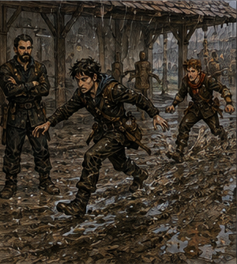
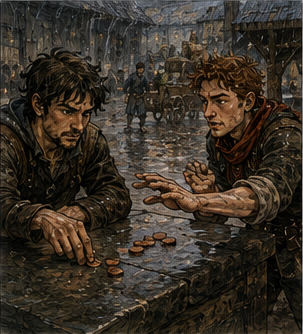

Jorren hit me before I could apologize. This was efficient. I had arrived at the yard late enough that the afternoon shadows had moved noticeably and early enough that Jorren had not yet decided to leave. He stood in the packed dirt with two wooden swords, one in each hand. He threw one at me. I caught it badly. He hit me with the other.
“Late,” he said.
“I was delayed by professional obligations.”
“You were talking.”
“Professionally.”
He hit me again. The sky had been gray when I left the guild. I had noticed. That was the embarrassing part. There were clouds above the western roofs, low and thick enough that anyone with eyes could have identified them as weather. The air had gone damp. The yard smelled like dirt instead of dust. I had classified all of that as background.
Then Jorren struck my shoulder and the first drop of rain hit my nose. I looked up. He hit me in the ribs.
“You keep doing that,” he said.
“Looking at the sky?”
“Looking somewhere else.”
“It started raining.”
“Yes.”
Another drop landed on my cheek. Then five. Then fifty. The yard changed in less than a minute. People cursed and gathered coats. A pair of Bronze adventurers abandoned a wrestling match and ran laughing toward the covered arcade. Someone near the equipment shed shouted about bows. The dry dirt darkened in irregular circles, then all at once. Jorren lowered his sword.
“We’re done.”
“What?”
“Rain.”
“I know what rain is.”
“Good. Go inside.”
I looked at the ground.
“We can still train.”
“No.”
“Why?”
He pointed with the wooden sword. The packed yard had already gone slick on top.
“So?”
“So you’re bad enough when the ground stays where you put your feet.”
“That feels personal.”
“It is.”
Rain drummed against the shed roof. I shifted my stance experimentally. My right boot slid half an inch. Jorren stared at me.
“What?”
“You just tested it.”
“I needed information.”
“You needed eyes.”
“Eyes suggested. Feet confirmed.”
He took the sword out of my hand. Training over. I hated weather. Not rain. Rain was fine. Weather was a system that changed plans without consulting me. I followed Jorren beneath the arcade. Alden was there. Of course he was.
He sat on a low stone wall with his red scarf tucked inside his leather coat and a meat pie in one hand. His hair was wet enough to suggest he had made no effort to avoid the rain.
“You’re late,” he said.
“I’ve already been punished.”
Jorren leaned the wooden swords against the wall.
“Not enough.”
Alden looked toward the yard.
“So tomorrow?” Alden asked.
“No,” Jorren said.
Alden frowned. I did too. Jorren looked between us.
“What?” Jorren asked.
“We were training tomorrow,” Alden said.
“Outside,” Jorren said.
“There’s an inside,” Alden said.
“Not for what I wanted,” Jorren said.
“What did you want?” I asked.
Jorren ignored me. Rainwater began running off the tiled roof in a continuous curtain. Alden took another bite of pie.
“Could use the covered loading yard,” Alden said.
“Too narrow,” Jorren said.
“The old horse court?” Alden asked.
“Stone,” Jorren said.
“South wall?” Alden asked.
“Mud,” Jorren said.
Alden chewed.
“Warehouse?” Alden asked.
Jorren looked at him.
“No.”
“You didn’t even ask which one.”
“I know enough,” Jorren said.
I looked from one to the other.
“What exactly were you planning?”
Jorren sighed.
“Distance.”
Alden smiled. Ah. Jorren had spent yesterday showing Alden what happened when he committed too quickly after gaining an advantage. Today, apparently, he intended to widen the problem.
“How much distance?” I asked.
“Enough that he has to decide whether to close it.”
Alden pointed his pie at Jorren.
“He means run.”
“I mean move,” Jorren said.
“You mean run while you hit me,” Alden said.
“If you let me.”
Alden grinned. That was a yes. Rain erased the yard. Not literally. The fence remained. The posts remained. The practice dummies remained, increasingly miserable. But the space Jorren wanted was gone. Plans changed. I disliked how quickly both men accepted that.
“Could train something else,” I said.
Jorren looked at me.
“No.”
“I didn’t say magic.”
“You were going to.”
“I was going to say footwork.”
“You looked at the rain.”
“Footwork happens in rain.”
“Not yours.”
Alden laughed. I considered leaving. Then thunder rolled somewhere beyond the western wall. Not close. Close enough that everyone under the arcade paused for half a breath. The rain strengthened. A stable boy ran across the yard with a blanket over his head.
A woman at the guild door shouted, “Canal road’s flooding again.” That got my attention. Jorren saw it.
“No.”
“I haven’t moved.”
“You did the face.”
Everyone knew the face now. This was intolerable. The guild door opened again and the ink-thumbed clerk stepped beneath the arcade. Her hair had begun escaping whatever arrangement usually kept it obedient.
“Anyone assigned west road, river path, or lower canal, check the board,” she called. “Two escorts delayed. One canceled. Ferryman’s refusing the south crossing until the water drops.”
A chorus of complaints answered her. She did not care. Alden stood.
“What about the tannery run?” Alden asked.
“Delayed,” the clerk said.
“How long?” Alden asked.
“Tomorrow morning if the road drains,” the clerk said.
“I had that,” Alden said.
“You have it tomorrow morning,” the clerk said.
“I have training tomorrow morning,” Alden said.
The clerk looked at Jorren.
“You?” she asked.
Jorren nodded. She looked back at Alden.
“Then you don’t,” the clerk said.
Alden opened his mouth. Closed it. I enjoyed this enormously.
“Weather,” I said.
He looked at me.
“Shut up.”
The clerk scanned the arcade.
“Need two Bronze for an indoor reassignment.”
Nobody moved. That was interesting.
“What kind?” I asked.
Jorren said, “Greg.” The clerk pointed at me.
“You volunteered.”
“I asked.”
“Close enough.”
Alden stepped beside me.
“What is it?”
The clerk looked at him.
“You too?”
He shrugged.
“My job drowned.”
“Your job is delayed.”
“Temporarily drowned.”
She considered us. Then Jorren. Jorren shook his head.
“No.”
“Excellent,” the clerk said. “Two Bronze.”
“What are we doing?” I asked.
“Moving flour.”
Alden stared. I laughed. The clerk did not.
“East storehouse roof started leaking. Quartermaster wants the dry sacks shifted before the water reaches them. Four copper each. Probably an hour.”
Alden looked toward the rain. Then at me.
“This is your fault.”
“How?”
“You asked for weather.”
“I did not.”
“You looked happy.”
“I’m happy now.”
“That’s worse.”
Jorren picked up the wooden swords.
“Go move flour.”
“You’re not coming?” I asked.
“I have somewhere dry to be.”
“Where?”
“Not moving flour.”
He left. I watched him go. Alden said, “I liked him less before I knew him.”
“That’s unusual.”
“For him?”
“For knowing people.”
We followed the clerk inside. The east storehouse belonged to the guild, which meant it had been designed by someone who believed stairs were a moral test. Three flights down, one corridor across, through a courtyard that was technically covered but leaked anyway, then up another narrow stair into a long room lined with sacks. The leak was obvious.
Water dripped through three places in the roof and ran down a support beam. A quartermaster with a shaved head stood among six laborers. He pointed.
“Those two rows to the inner wall. Leave the marked sacks. Don’t stack higher than shoulder. If anything tears, stop.”
Alden looked at me.
“Hero work.”
“You recovered a goat.”
“It was a difficult goat.”
We started moving flour. The first sack weighed enough to make my body remind me that being nineteen did not mean being strong. I got it onto my shoulder. My left leg wobbled. Alden took two. I hated him immediately.
“Show-off.”
“Efficient.”
“You’re carrying them wrong.”
He stopped. I had not meant to say that. The quartermaster looked over. Alden said, “How?” I pointed.
“You’re letting the second one pull your shoulder back. Fine for ten steps. Bad for fifty.”
He adjusted.
“Like this?”
“Worse.”
He adjusted again.
“Now?”
“Annoyingly better.”
He walked away. The quartermaster stared at me.
“What?”
“You a porter?”
“No.”
“Then carry.”
Fair. I carried. The work settled into a rhythm. Lift. Walk. Set. Return. Rain hammered the roof. The sound changed the room. Conversation had to happen closer. Footsteps disappeared beneath it. The air smelled of wet wood, flour dust, wool, and the faint mineral scent that came when old stone finally got enough water to remember it had once been mud. I liked it.
Not the carrying. The rain. There was something satisfying about a whole city being forced to admit the sky existed. Alden passed me going the other way.
“Tomorrow’s training is fucked.”
“Delayed.”
“Same thing.”
“No. One implies emotional injury.”
“I’m emotionally injured.”
“You’ll recover.”
“What are we doing instead?”
“Moving flour.”
“Tomorrow.”
“I don’t know.”
He looked genuinely dissatisfied. Three weeks ago, Alden had wanted Gold because Gold was above Bronze. Platinum because Platinum was above Gold. S because I had put the letter in front of him. Now he was irritated because he had expected to learn something specific and weather had taken it away. Good. Dangerous word. Useful. Worse word. I lifted another sack. Alden caught me watching.
“What?”
“Nothing.”
“That’s your lying nothing.”
“I have several.”
“I know.”
He walked away. The leak spread, not dramatically. A dark line moved across one roof plank and became a second drip. The quartermaster cursed.
“Move the back row too.”
Everyone groaned. I set my sack down. The new drip landed directly on the cord. Water darkened the fibers. I stared. Cord. Mouth. Closure. Seal. Wrong sack. Ordinary flour. Probably. The association was enough.
“What?” Alden asked.
“Nothing.”
“Again?”
“Different nothing.”
I crouched beside the sack. The cord had swollen slightly where wet. No magic. No visible structure. I touched it. The knot tightened under my finger. Not by itself. Wet fiber. Simple. Still. Something about the South Canal seal had responded when its knot was disturbed. Edrin had called the sack ordinary and the closure not. What counted as disturbance? Pulling? Loosening?
Cutting? Wet cord changing shape? I stood. The quartermaster was watching me.
“If you start interrogating the flour, I’m docking your pay.”
“I had a thought.”
“Carry it to the inner wall.”
I did. The next sack went faster. Then the next. On the sixth trip, one of the laborers slipped. Not badly. His heel hit a wet patch near the leaking beam. The sack on his shoulder shifted. He caught himself against the wall. I saw the movement before it finished. Weight going left. Knee collapsing inward. Sack continuing. A small intervention could have changed it.
Barrier at the heel. No. Too slow. At the sack. Angle. Not stop. Redirect. I gathered mana. Then the laborer recovered on his own. I let the mana go. Nothing happened. Alden had seen.
“You were going to cast.”
“Yes.”
“Why didn’t you?”
“He didn’t need me.”
Alden looked at the laborer, who was already swearing at the wet floor. Then back at me.
“Huh.”
“What?”
“Nothing.”
“That’s my line.”
“I have several.”
I disliked him. We carried more flour. Half an hour later, the rain had not weakened. The storehouse had become a map of buckets. The quartermaster moved us to a third row. My shoulders burned. Alden had stopped carrying two sacks at once. I noticed. He noticed me noticing.
“Shut up.”
“I said nothing.”
“You were about to.”
“I was about to congratulate you on learning.”
“Fuck off.”
That was friendship adjacent. Possibly. Or murder adjacent. The distinction could wait. We reached the last six sacks. A loud crack came from above. Everyone froze. Not thunder. Wood. The quartermaster looked up.
“Out.”
Nobody argued. That mattered. We moved. One laborer grabbed a sack. The quartermaster slapped it out of his hands.
“Leave it.”
We filed toward the door. I looked back. Water poured through the new split in the roof. Not a collapse. Yet. The support beam beneath it had gone dark with water. The crack had opened along a joint. I knew nothing about roofs. Important. I knew load. Some. Magic load. Different. Probably. Alden caught my coat.
“Greg.”
“I’m going.”
“You’re staring.”
“I know.”
“Do it outside.”
He pulled. I went. That mattered too. We reached the corridor. The quartermaster counted heads. Seven laborers. Two adventurers. Him. Ten.
“Good,” he said. “Nobody goes back until the carpenter looks.”
“What about the flour?” one laborer asked.
“It’s flour.”
That answer pleased me. The man looked horrified.
“It’s thirty silver of flour.”
The quartermaster shrugged.
“It’s not ten people.”
Better answer. Alden leaned against the wall. Rainwater ran down his hair from the courtyard crossing.
“So,” he said. “Four copper?”
The quartermaster looked at him.
“You moved the flour.”
“Most of it.”
“You get paid.”
Alden nodded. I said, “That’s your concern?”
“I’m wet.”
“We’re indoors.”
“I was wet earlier.”
“You chose not to avoid it.”
“That doesn’t make me less wet.”
The quartermaster left to find the carpenter. The laborers dispersed toward a kitchen. Alden and I remained in the corridor.
“What now?” he asked.
“Now?”
“Training tomorrow.”
“Still thinking about that?”
“Yes.”
I looked toward the courtyard. Rain fell in silver ropes beyond the arches. The yard would be mud tomorrow even if the sky cleared.

Jorren’s distance drill was gone. At least for a day. Maybe two. I could imagine trying to recreate it somewhere else. Warehouse. Covered market. Long corridor. Bad surfaces. People. Costs. Permission. Or we could do something else. The obvious answer annoyed me because it was obvious.
“We train what the weather gives us.”
Alden frowned.
“That sounded wise.”
“I apologize.”
“What does the weather give us?”
I looked at the wet stone.
“Bad footing.”
His smile returned.
“No.”
“What?”
“That’s Jorren’s no.”
“You’ve known him four days.”
“It’s a good no.”
I laughed. Then I thought about it properly. Bad footing was useful. It was also a stupid thing to practice at speed when my ankle still failed under dry conditions and Alden’s preferred method of learning involved discovering the boundary with his face. Hessa would kill me. Jorren would help.
“No,” I agreed.
Alden looked disappointed.
“Something else.”
Rain. Plans changed. What remained? Decision. Timing. Commitment. Distance could be simulated without running. Maybe.
“Coins,” I said.
“What?”
“We need coins.”
“For training?”
“Yes.”
“How many?”
I checked my purse. Not many.
“Your coins.”
“No.”
“You’re richer than me.”
“I made twelve copper yesterday.”
“I made twelve before that.”
“You spent some.”
“So did you.”
“On food.”
“That’s spending.”
“It keeps me alive.”
“Luxury.”
Alden stared at me.
“Your training is terrible.”
“You haven’t seen it yet.”
“Good point.”
The guild clerk found us before I could explain. She carried two wooden tokens.
“Payment.”
Alden held out his hand. She gave him one. I held out mine. She kept it.
“What?”
“You volunteered.”
“That does not remove compensation.”
“I wanted to see your face.”
She gave me the token.
“This guild is corrupt.”
“Cash desk closes at fifth bell.”
“What time is it?”
She looked toward the rain.
“Later than it looks.”
Weather had eaten the light. I disliked that too. Alden pocketed his token.
“Coins.”
“Yes.”
“Tomorrow?”
“If the yard’s bad.”
“And if it clears?”
“Jorren hits you.”
“He hits you too.”
“Mostly me.”
“Good.”
He started toward the stairs.
“Where are you going?”
“Cash desk.”
“We could talk about the exercise.”
“After I have money.”
“That is reasonable.”
He stopped.
“You coming?”
I looked toward the corridor leading back to the east storehouse. Carpenter. Roof. Wet cord. Load. No. Not my roof. Not my flour. Not my seal. The South Canal sacks were behind a locked guild door with a warder who knew more about current seals than I did. Hessa had told me to stop when told. The quartermaster had told us out.
Jorren had told me training was over. This was becoming oppressive. I followed Alden. At the cash desk, we traded the wooden tokens for four copper each. Alden immediately spent one on two hot buns from a woman sheltering beneath the guild entrance. He handed me one. I looked at it.
“What?”
“You carried flour.”
“So did you.”
“I bought two.”
“Why?”
“I wanted two.”
“Then why are you giving me one?”
He had already bitten into his.
“Because I bought two.”
This was not an explanation. I took the bun. It was hot enough to hurt my fingers. We stood beneath the guild awning and watched rain fill the street gutters. People ran under cloaks. Carts moved slower. A horse refused a puddle with the absolute conviction of an animal whose opinions outweighed commerce. Tomorrow had changed. The tannery run had changed. Training had changed.
The guild board had changed. A roof had changed. A sack of flour had become more valuable because water was falling in the wrong place. None of it was dramatic. That was the interesting part. I bit into the bun. Alden said, “What are the coins for?” I chewed.
“Distance.”
“You said we can’t run.”
“We don’t need to.”
He waited. I took two coppers from my purse and put them on the stone ledge between us, about a foot apart.

“Pick one.”
He reached. I slapped his hand.
“What the fuck?”
“Too fast.”
“You said pick one.”
“I did.”
He stared at me. I smiled. Rain hammered the awning.
“Tomorrow,” I said.
His eyes narrowed. Then he smiled too.
“Oh.”
That was not reassuring. I ate the rest of my bun. Across the street, runoff struck the curb, split around a loose stone, and joined itself again on the other side. I watched it for one second too long. Alden followed my gaze.
“What?”
“Water.”
“I know what water is.”
“Good.”
He waited. I kept walking. Not every question needed to become an experiment today. The rain followed us home anyway.